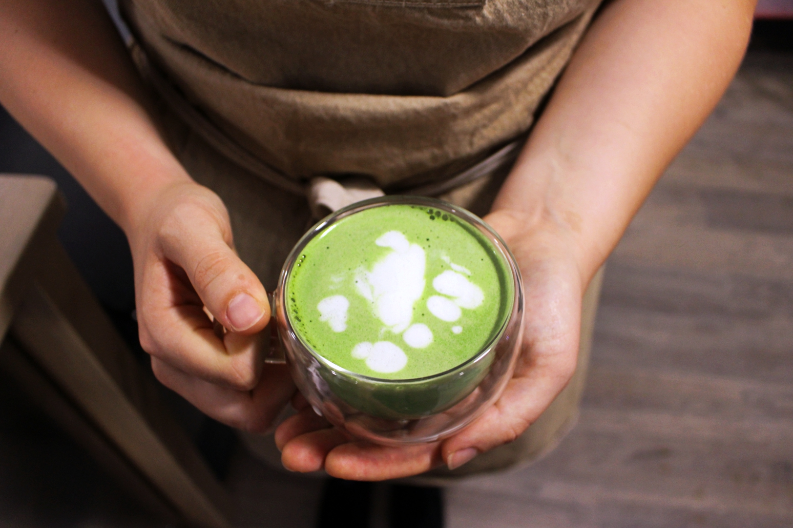
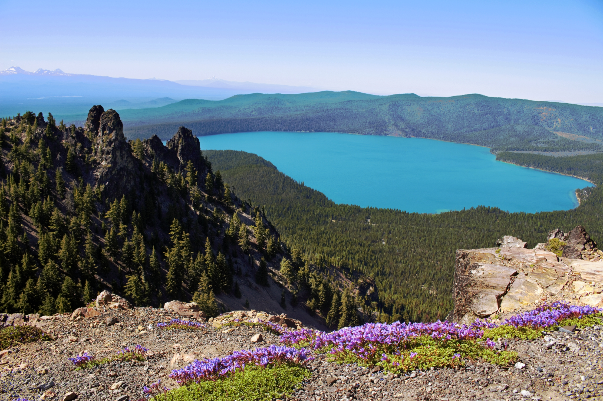
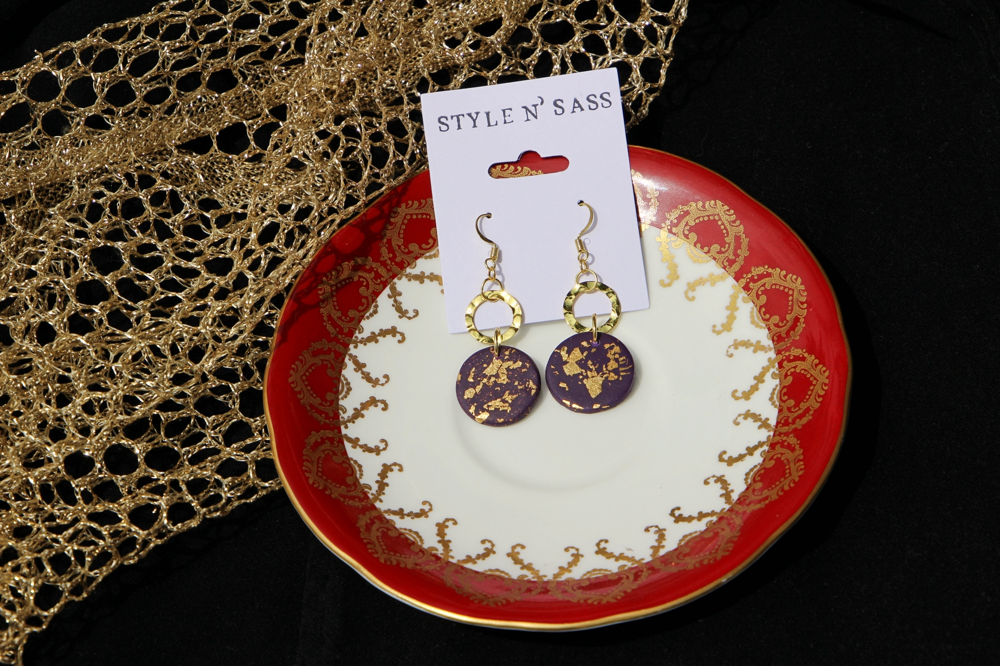
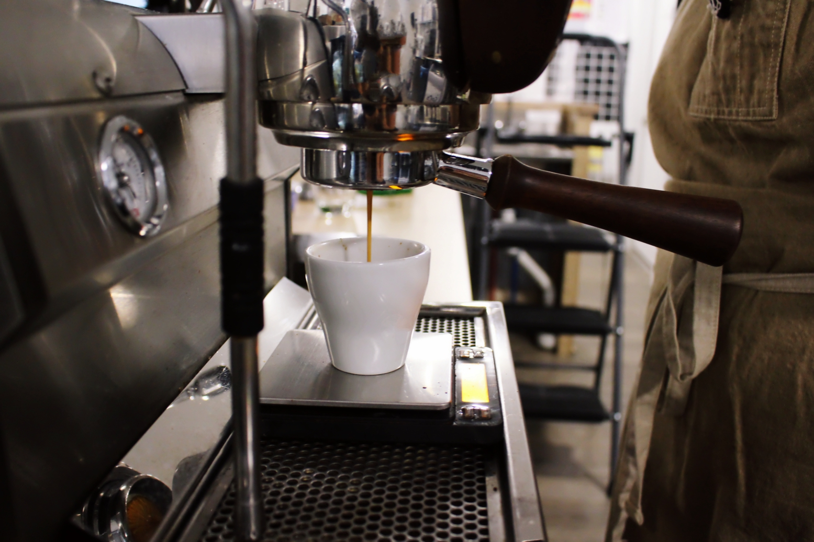
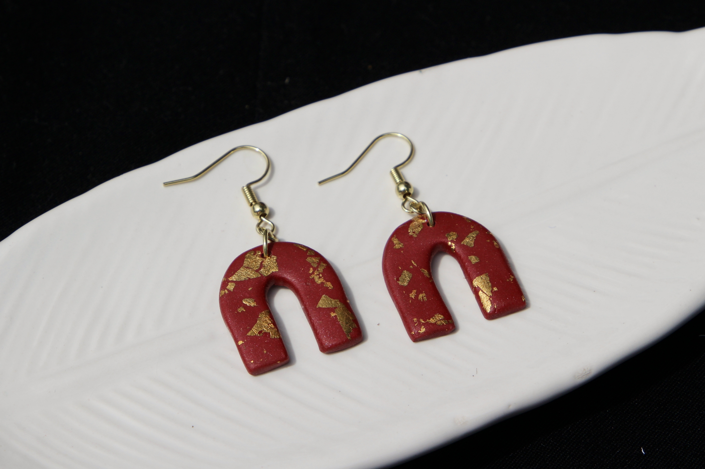
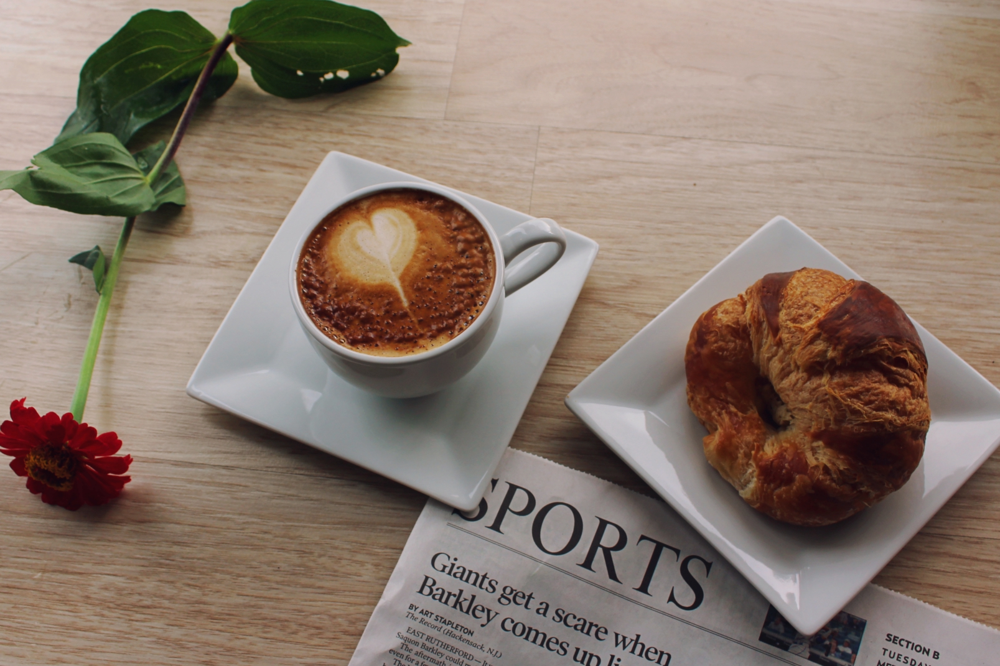
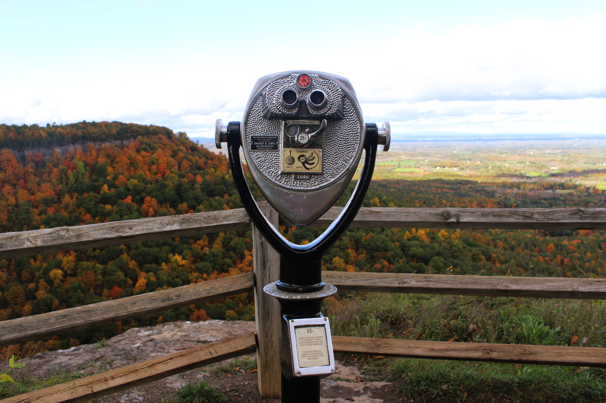
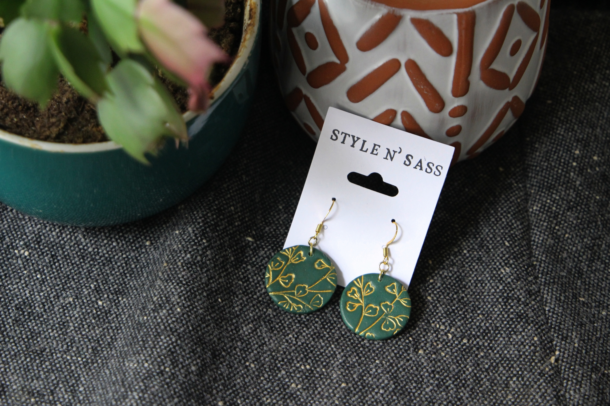

photography
Shown below are all photos I have taken for a variety of occasions, including: promotional photos for a local coffee shop, product photos for a jewelry brand, and during my personal travels. I also love taking pictures of my friends and family!
       film
Below is a short film I created as a project for a film course I took as an undergraduate. It is modeled after the city-symphony style of avant-doc film that became popular in the 1920s, but with a twist: rather than feature a city, this film showcases the small village in upstate New York where I spent most of my adolescence.